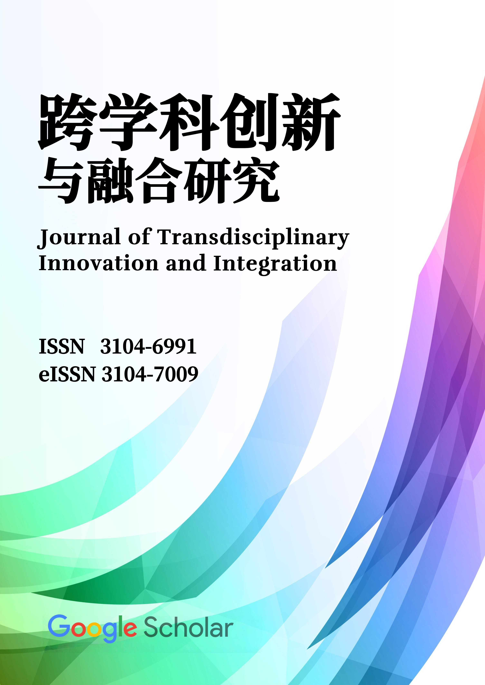
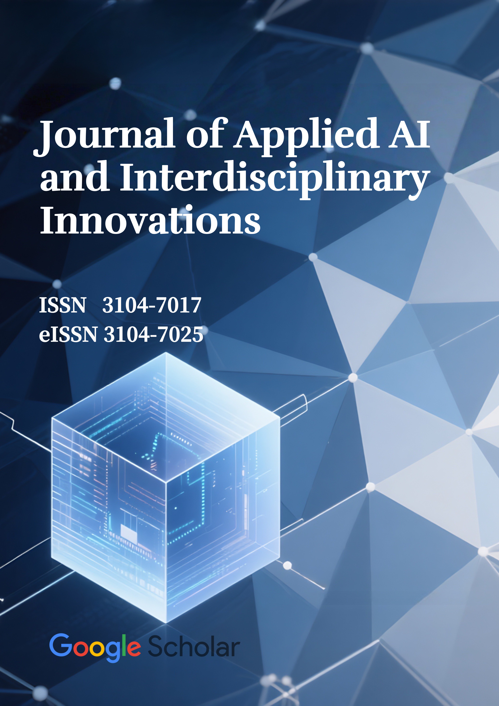

核心研究領域核心研究领域Core Research Areas
人文科學人文科学Humanities
探索歷史、哲學與藝術，解讀人類文明的深度。探索历史、哲学与艺术，解读人类文明的深度。Exploring history, philosophy, and arts to understand human civilization.
社會科學社会科学Social Sciences
分析社會結構、經濟動態與公共政策的相互作用。分析社会结构、经济动态与公共政策的相互作用。Analyzing social structures, economic dynamics, and public policy.
高等教育研究高等教育研究Higher Education Studies
專注於教育創新、學術發展及全球高等教育趨勢。专注于教育创新、学术发展及全球高等教育趋势。Focusing on educational innovation, academic development, and global trends.
國際關係国际关系International Relations
研究全球治理、地緣政治與跨文化交流的複雜性。研究全球治理、地缘政治与跨文化交流的复杂性。Investigating global governance, geopolitics, and cross-cultural communication.
主辦學術期刊主办学术期刊Academic Journals

《跨學科創新與融合研究》《跨学科创新与融合研究》 Journal of Transdisciplinary Innovation and Integration (JTII)
前往期刊前往期刊Visit Journal

《應用式人工智能與跨學科創新》《应用式人工智能与跨学科创新》 Journal of Applied AI and Interdisciplinary Innovations (JAAI-II)
前往期刊前往期刊Visit Journal我們的學者我们的学者Our Scholars

陳嘉欣 教授Prof. Jia-Xin Chen
社會學系主任社会学系主任Head of Sociology

李偉倫 博士Dr. Wei-Lun Li
歷史學首席研究員历史学首席研究员Principal Investigator, History

Anna Petrova 教授Prof. Anna Petrova
比較文學訪問學者比较文学访问学者Visiting Scholar, Comparative Literature

王浩宇 院士Academician Hao-Yu Wang
經濟學榮譽教授经济学荣誉教授Honorary Professor, Economics